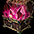

混沌の大地

混沌の大地とは
前提クエスト
ダンジョンのルール
各階層攻略
混沌の破片と指輪
ランキングシステム
備考
混沌の大地とは
古都ブルンネンシュティグ(座標[135,135]付近)にある爆発跡地より参加条件を満たす事で「混沌の大地」に挑戦できます。
* Lv600以上
* 赤い光 1個以上
* 参加人数 1人～4人
*（パーティーリーダーよりレベル差±100かつLv600以上）
* 指定の前提クエストをクリア済
※パーティーの人数に関係なくリーダーが「赤い光」を1個消費すれば挑戦可能
赤い光はレッドストーンのオーラより一定確率で入手可能です。
前提クエスト
・「混沌の大地」関連クエスト「謎の爆発」
⇒対象レベル：Lv600以上
⇒受諾NPC：イラリア（古都ブルンネンシュティグ 座標[135.135])
※新コンテンツ「混沌の大地」を深く理解するためのクエストです。
※「謎の爆発」を含む一連のクエストを完了する事で
新システムに使用するアイテム「赤い光」を獲得する事が可能です。
| 謎の爆発 | |
|---|---|
|
関連NPC
冒険家協会ブルンネンシュティグ本部 協会事務官 クエスト情報 古都ブルンネンシュティグに何か問題が起きているようだ。協会事務官に会って何があるのか聞いてみよう 関連NPC 古都ブルンネンシュティグ イラリア クエスト情報 現場にいるイラリアという魔術師が異常現象について知っているかもしれない。イラリアに会って状況について聞こう。 クエスト情報 ウィザードギルドにあるイラリアの日誌を探そう。南西側に位置した本棚にある黒い表紙の日誌だそうだ。 関連NPC 魔法都市スマグ イラリア クエスト情報 黒い日誌を読んでみた。ウィザードギルド付近でイラリアの声が聞こえる。魔法都市スマグにいるイラリアのところに戻ろう。 クエスト情報 古都ブルンネンシュティグに緊急なことが発生したようだ。 |
|
| 受諾場所 | 古都ブルンネンシュティグ イラリア(135,135) |
| 受諾条件 | Lv600～ |
| 報酬 | - |
| 冒険家協会ブルンネンシュティグ本部 |
協会事務官（27,27）へ |
| 古都ブルンネンシュティグ |
イラリア（135,135）へ 話した直後に魔法都市スマグに飛ばしてもらえる。 すぐ近くのワープホールよりウィザードギルドに入る。 |
| ウィザードギルド |
本棚（5,40）をクリック |
| 魔法都市スマグ |
スマグのイラリア（27,30）へ 完了後、古都ブルンネンシュティグに飛ばしてもらえる。 |
| 混沌の大地 | |
|---|---|
|
関連NPC
冒険家協会ブルンネンシュティグ本部 協会事務官 クエスト情報 魔法都市スマグに行ってきた間何か不吉な予感がした。協会事務官のもとへ戻って話し合おう。 関連NPC 古都ブルンネンシュティグ イラリア クエスト情報 古都に開いたゲートは不吉なオーラについてイラリアに聞こう。イラリアは古都に開いたゲート付近にいるはずだ。 関連NPC 古都ブルンネンシュティグ イラリア クエスト情報 混沌の大地に入る心の準備が終わったら、もう一度イラリアに話しかけてみよう。 |
|
| 受諾場所 | 冒険家協会ブルンネンシュティグ本部 協会事務官 |
| 受諾条件 | Lv600～9999 |
| 報酬 |
赤い光 1個 [取引不可] 経験値 2000万 |
| 冒険家協会ブルンネンシュティグ本部 |
協会事務官（27,27）へ |
| 古都ブルンネンシュティグ |
イラリア（135,135）に話す もう1度、イラリア（135,135）に話す |
ルール
階層とWAVE
1層目から順番に挑戦できて、最大24階層(実装直後は15階層)まで挑戦できます。階層が進むほどモンスターのレベルと難易度が上がっていきます。
ダンジョン内ではモンスターから経験値・ゴールドを獲得できません。

既に特定の段階をクリア済のメンバーとパーティーを組むことで未到達の階層にも挑戦できます。
※階層をクリアしたことにはなりません。
各段階は10の「ウェーブ」で構成されており制限時間内にモンスターを全て倒す事で次の「ウェーブ」に移ります。
※時間内にモンスターを全て倒せなかった場合は失敗となります。
※WAVW10は3分、その他は1分
※PTメンバーが全滅した時点で討伐失敗となり、ゲームオーバーとなります。
アイテム制限
「混沌の大地」では通常のポーション等の消耗系アイテムは使用できず専用のポーションのみ使用可能。復活の巻物や協会支援ポーション、火の鳥の尻尾なども不可。


専用ポーションにはクールタイム等ついていません。
ベルトに装着可能。
※入場後、ポータル・スフィアー等の「スフィアーのマナに願う」は使用可能。
※「混沌の大地」内で死亡した場合や、制限時間を過ぎた場合は古都に移動されます。
ギミック：床
※「混沌の大地」内では地面に様々なエフェクトが発生し、ダメージを受ける、HPが回復するなどの効果が発生します。
赤いエフェクトはダメージを受ける床です。
0.5秒間隔で自分のHPの5%程度のダメージを受けます。

緑のエフェクトはHPを回復できます。
0.5秒間隔で自分のHPの5%程度回復します。
※歪み効果がない場合
ギミック：歪み
「歪み」は「混沌の大地」内で発動される専用デバフです。キャラクターへのデバフ効果、モンスターへのバフ効果など様々な種類があります。
2週間毎該当週の水曜日、0時頃に「歪み」の内容が変化します。
各階層ごとに発動する歪みは異なり、ランダムに決定されます。

以下、歪みの内容と効果一覧です。
|
|
|
|
|
|---|---|---|---|
|
|
|
汚染範囲の増加、汚染によるダメージが増加する - 汚染範囲30px増加 - 汚染によるダメージ20%増加 |
|
|
|
|
一定周期で周囲のキャラクターを汚染中心部に引き寄せる - 3秒に1度汚染領域の上にプレイヤーを汚染中心へ2m引き寄せる。 |
|
|
|
|
モンスターの魔法抵抗力が増加する - モンスターの魔法抵抗力50%増加 |
|
|
|
|
モンスターの防御力が増加する - モンスター防御力50%増加 |
|
|
|
|
地面に発生する回復効果(再生)が発動しなくなる | |
|
|
|
地面に発生する回復効果以外の体力回復効果は逆転する 地面に発生する回復効果は増加するが、10%分のダメージを受ける - 再生効果 50%増加 - HP吸収、魔力吸収・スキルの回復などもダメージ対象になる。 - この効果で死亡することはないが、HPが1まで減少する。 |
|
|
|
|
キャラクターのステータスが減少する - プレイヤーのステータス 30%減少 ※忍耐OPなどのステ低下耐性で軽減不可。 |
|
|
|
|

|
キャラクターのアイテム装備要求レベルが200増加する |
|
|
|
キャラクターの範囲攻撃ダメージが減少する - 範囲攻撃のダメージが50%減少 |
|
|
|
|
モンスター死亡時に周辺のキャラクターへダメージを与える - モンスター死亡時、周辺2m範囲の敵に最大体力の0.1％程度のダメージを与える。 |
|
|
|
|
キャラクターの移動速度が減少する、暗闇状態になる - プレイヤーの移動速度50%減少 - プレイヤーが暗闇状態になる。 |
|
|
|
|
モンスターが受けるダメージが減少する モンスターの受けるダメージ20%減少 |
|
|
|
|
モンスター死亡時に一定確率で復活する - モンスターが死亡時、50%の確率で復活 - 復活は1回のみ可能 |
|
|
|
|
キャラクターの体力が1秒毎に減少する - プレイヤ0の体力が1秒毎に1%減少する。 |
|
|
|
|
モンスターからの攻撃に対するブロック・回避ができなくなる - |
|
|
|
|
ボス等級モンスターの攻撃力・防御力・魔法抵抵抗が増加する - 5,10ウェーブのモンスターが非常に強力になる。 |
|
|
|
|
モンスターの攻撃速度・移動速度が増加する | |
|
|
|
クリティカル・ダブルクリティカル・強打以外の攻撃が無効化される | |
|
|
|
一定時間ごとにモンスターが2秒間無敵状態となる - 全てのモンスターが10秒ごとに2秒間いかなるダメージも受けなくなる。 |
|
|
|
|
モンスターが受けたダメージの一部を反射する - 敵モンスターは受けたダメージの1%を反射 |
Lv600 ～ Lv799 ⇒1個
Lv800 ～ Lv999 ⇒2個
Lv1000 ～ Lv1199⇒3個
Lv1200 ～ Lv1399⇒4個
・段階により「歪み」の内容が変化します。
・Lv1200以下の場合は「上級の歪み」は発動されません。
・「上級の歪み」は複数同時に発動されません。
報酬

「混沌の大地」内でモンスターを討伐するときに一定確率で関連アイテムや魔力インク瓶をドロップします。
各段階の終了時に「ボックス」が4個出現し、中から様々な報酬が獲得可能です。
※一定の段階を超えると「ボックス」の中身が良くなっていきます。(入場時に確認可能)
※「ボックス」には所有権が発生し、所有権のないものは獲得できません。
- 1人で挑戦した場合は4つ全てが入手可能。
- 2人の場合はどれか2つに所有権あり（死亡時は開封不可）
- 3人の場合は1~2つが開封可能。
- 4人で挑戦した場合は各プレイヤーが1つずつ開封可能。
インベントリの空きがないとアイテムを入手できないのでインベには余裕を。
※ダンジョン内では消耗系アイテムはほぼ全て使用できず、鞄の整理が困難なため、入場前に整理しておくことをお勧めします。
ボックスから獲得可能なアイテムは以下です。
| 名称 | 詳細 | |
|---|---|---|
| タオの赤い光ボックス | - 7段階以上で出現 - 混沌指輪をランダムで入手可能。 - 刻印レベル1で出現 


|
|

|
赤い光刻印箱 | 赤い光刻印書 (1個〜5 個) 入手可能 混沌指を強化するのに必要。 |

|
混沌の破片袋 |
 混沌の破片 10～30個 混沌の破片 10～30個 |
|  | 混沌の破片箱 |
混沌の破片 40～60個 |

|
炎の石 | 1個 |

|
金色の魔力増幅魔法書 [T] | 1個 取引可能 |

|
金色の再構成魔法書 [T] | 1個 取引可能 |

|
オプションお守り箱 | 1個 |

|
密封された異界の強化石 | 1個 取引可能 |
報酬：専用指輪
「混沌の大地」内では「混沌」「破壊」「滅亡」「災厄」「破滅」の5種類の新規指輪アイテムを確率で獲得できます。※上記指輪アイテムは取引可、破壊可、銀行預入可、分解可。
※上記指輪アイテムは「混沌の大地」で獲得できる「赤い光の刻印書」により30段階まで強化可能です。
※「赤い光の刻印書」での強化に失敗した場合、指輪が破壊される場合があります。
アイテムの詳細はこちら
報酬：魔力インク

モンスター等から魔力インク瓶を入手できることがあります。
小型・中型・大型の3種類あり、いずれも取引可能。
重ね置き20個まで可能で、開封すると魔力インクを入手できます。
| 名称 | 獲得可能な魔力インク数 | |
|---|---|---|

|
小型魔力インク瓶 | 5～30個 |

|
中型魔力インク瓶 | 20～60個 |

|
大型魔力インク瓶 | 60～100個 |
各階層攻略
| 階層 | mobLv | 入場制限 | 報酬 |
|---|---|---|---|
| 1段階 | 600～650 | - |
- 混沌の破片袋 - 混沌の破片箱 - 炎の石 - 金色の魔力増幅魔法書 [T] - 金色の再構成魔法書 [T] - オプションお守り箱 - 密封された異界の強化石 |
| 2段階 | 650～700 | - | |
| 3段階 | 700～750 | - | |
| 4段階 | 750～800 | - | |
| 5段階 | 800～850 | - | |
| 6段階 | 850～900 | - | |
| 7段階 | 900～925 | - |
- タオの赤い光ボックス - タオの赤い光刻印箱 - 混沌の破片袋 - 混沌の破片箱 - 炎の石 - 金色の魔力増幅魔法書 [T] - 金色の再構成魔法書 [T] - オプションお守り箱 - 密封された異界の強化石 |
| 8段階 | 925～950 | - | |
| 9段階 | 950～975 | - | |
| 10段階 | 975～1000 | - | |
| 11段階 | 1000～1025 | - | |
| 12段階 | 1025～1050 | - | |
| 13段階 | 1050～1075 | - | |
| 14段階 | 1075～1100 | - | |
| 15段階 | 1100～1125 | - |
混沌の破片と指輪
「混沌の破片」は混沌の大地内でドロップします。「混沌の破片」を集める事で指輪に称号を付与するなどの強化を行う事が出来ます。
「混沌の破片」を使用する指輪強化システムは古都ブルンネンシュティグのNPC「ニケ」(座標142.142)にて行えます。
※ 称号の付与、称号等級の上昇、称号数値の再設定、称号の削除
※ 称号を付与した指輪は、鏡の魔法書・神秘鏡・魔力抽出機などのエンチャが使用不可になります。
※ オプションの付与されていないアイテムにのみ使用可能。
※ 取引は可能。
※ 2020.2現在、本来の指に付与可能なオプション(ドロップするオプション)以上の強化は行えません。
※ 着用制限のある装備や取引不可の指であっても強化可能。
詳しくは混沌の破片 強化システムを参考にしてください。
ランキングシステム

- 混沌の大地ランキングは、古都ブルンネンシュティグの赤黒い光オブジェクトより確認できます。
- 混沌の大地ランキングは、1人モードでのみ参加/更新できます。
- 混沌の大地ランキングは段階をクリアした時間順にリアルタイムに配置/更新されます。
- 最大100位まで表示されており、毎週水曜日0時を基準に初期化されて適用されます。
- 以前のランキング確認して、前のランキングの報酬を受け取りできます。
- 前のランキングの報酬を直接受け取りしていない場合、その褒賞は受け取りできません。
[混沌の大地ランキング報酬]
| ランキング | 褒賞 |
|---|---|
| 1位 | 赤い光刻印ボックス1 個、混沌石1 個 |
| 2位〜10位 | 赤い光刻印ボックス1 個 |
| 11位〜30位 | 赤い光刻印書1 個 |
補足
- ダンジョン内で入手可能な混沌石は製錬システムで高位のアイテムを強化するのに必要になります。[参考]【12/23(月)追記】Ver0.0730アップデート、新規追加内容をご紹介！
[参考]「混沌の大地」に「歪み」システム追加